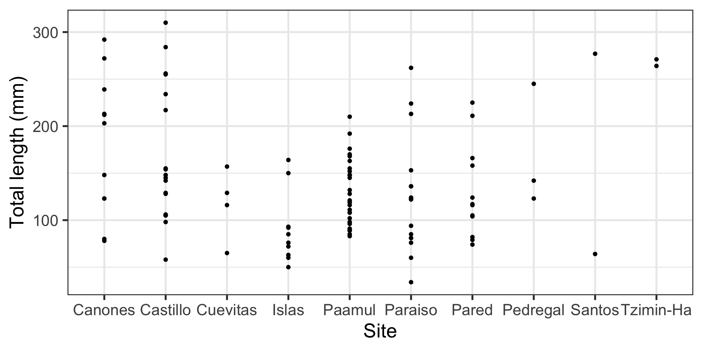
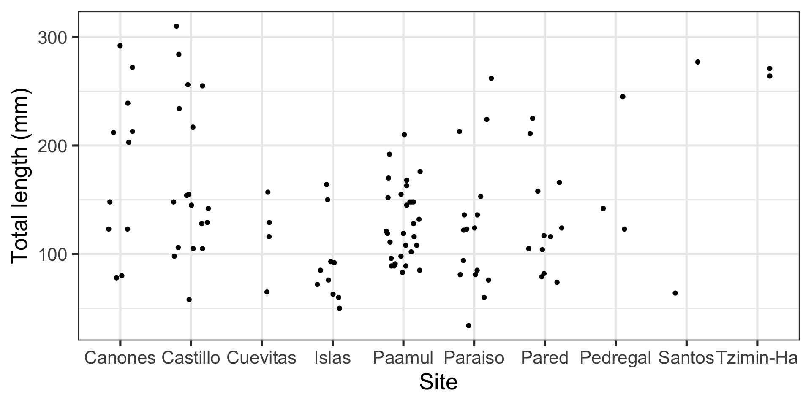
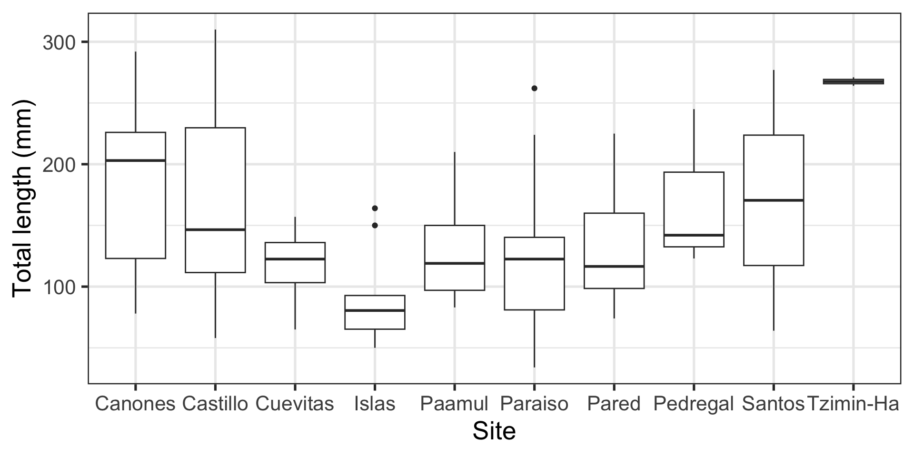
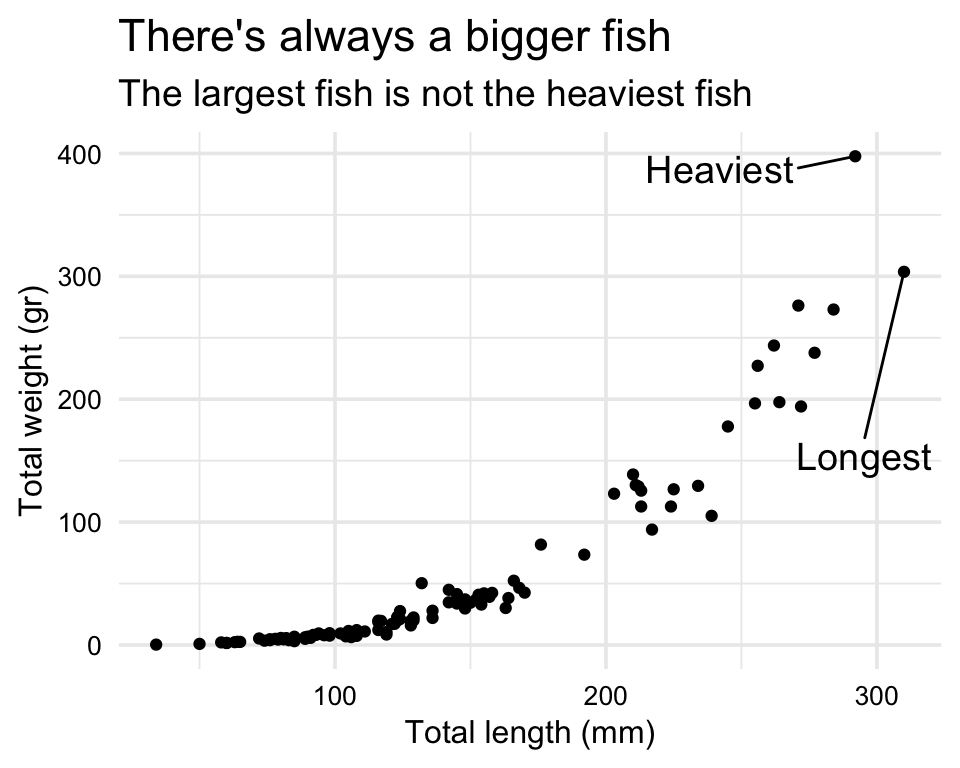

| id | total_length_mm |
|---|---|
| 001-Po-16/05/10 | 213 |
| 002-Po-29/05/10 | 124 |
| 003-Pd-29/05/10 | 166 |
EVR 628- Intro to Environmental Data Science
Week 2: Data visualization
Examples: Lionfish Biometry

data_lionfish, from theEVR628toolspackage- Contains biometric measurements for 109 lionfish (Pterois volitans) captured off Puerto Aventuras (Mexico)
Tip
Use ?data_lionfish to look at the documentation.
Visualizing for Yourself

Same Data, Multiple Plots
Which of this is best at showing the relationship between size and weight?




Which one is best at showing the size and weight of most fish?
Same Data, Multiple Plots
Which is best at shwoing me the number of samples by site and size?


Principles of Visualization
You know what type of graph you want, lets make it pretty
Small parentheses: “Add lightness”

Instead of thinking “what can I add to my plot?” think “what can I remove from my plot?
Simplify
Code
p <- ggplot(data = data_lionfish,
mapping = aes(x = total_length_mm,
y = total_weight_gr)) +
geom_point()
p +
theme_gray() +
scale_x_continuous(breaks = seq(0, 350, by = 15),
limits = c(0, 350)) +
scale_y_continuous(breaks = seq(0, 400, by = 20),
limits = c(0, 400)) +
theme(axis.line = element_line(color = "black"),
panel.grid = element_line(color = "black")) +
labs(title = "Total length (mm) vs total weight (gr) for 109 lionfish sampled from Mexico",
subtitle = "Note that the largest fish is not the heaviest fish")
Code
longest <- data_lionfish |> slice_max(total_length_mm)
heaviest <- data_lionfish |> slice_max(total_weight_gr)
p +
geom_text_repel(data = longest,
label = "Longest",
nudge_x = -5,
nudge_y = -150,
size = 5) +
geom_text_repel(data = heaviest,
label = "Heaviest",
nudge_x = -50,
nudge_y = -10,
size = 5) +
theme_minimal(base_size = 14) +
theme(axis.text = element_text(color = "black", size = 10),
axis.title = element_text(color = "black", size = 12)) +
labs(x = "Total length (mm)",
y = "Total weight (gr)") +
labs(title = "There's always a bigger fish",
subtitle = "The largest fish is not the heaviest fish")
Text


Color Scheme

Code
ggplot(data = data_lionfish,
mapping = aes(x = site, fill = site == "Paamul")) +
geom_bar() +
scale_fill_manual(values = c("FALSE" = "gray",
"TRUE" = "darkred")) +
coord_flip() +
labs(x = "Site", y = "N",
title = "N = 31 come from <span style='color:darkred;'>Paamul</span>") +
theme(plot.title = element_markdown(),
axis.title.y = element_markdown(),
legend.position = "None") +
scale_y_continuous(expand = c(0, 0),
limits = c(0, 32))
Do you really need to use color?
Use better colors
Avoid redundant use of your limited aesthetics (x, y, size, color, shape)
Categorical


Use a discrete color palette for categorical data
It is difficult to track more than (6) 10 colors
These colors come from EVR628tools::palette_UM(), using UM’s visual style guide
Sequential
Diverging palette